IIO Oscilloscope
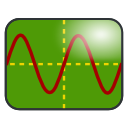About
The ADI IIO Oscilloscope is a cross platform GUI application, which demonstrates how to interface different evaluation boards from within a Linux system. The application supports plotting of the captured data in four different modes (time domain, frequency domain, constellation and cross-correlation). The application also allows to view and modify several settings of the evaluation board’s devices.
Installation
Windows
Linux
To build on an embedded target (e.g. aarch64), we recommend using the Kuiper Linux Update scripts. This is a tried/proven method that does everything in a quick script.
To build on a development host (e.g. x86 laptop or desktop) do the following:
On Ubuntu or Debian install the following dependencies (see adi_update_tools.sh#L317-L320 for a maintained list):
~$
apt-get -y install \ libgtk2.0-dev libmatio-dev \ libfftw3-dev libxml2 libxml2-dev bison flex libavahi-common-dev \ libavahi-client-dev libcurl4-openssl-dev libjansson-dev cmake libaio-dev \ ncurses-dev libserialport-dev libcdk5-dev
Install the
libiio-devpackage in Debian or Ubuntu or build and install the libiio library from source, by following these instructions. Make sure you do the finalmake install.Important
Users building libiio from source, please use ADI libiio repository’s branch libiio-v0.
Optionally build and install the libad9166-iio and libad9361-iio libraries, by following these instructions.
Download the source using git:
~$
git clone https://github.com/analogdevicesinc/iio-oscilloscope.git
~$
cd iio-oscilloscope
~/iio-oscilloscope$
git checkout origin/main
Or, download a zip, and uncompress it:
~$
wget https://github.com/analogdevicesinc/iio-oscilloscope/archive/main.zip~$
unzip master.zip~$
cd iio-oscilloscope
Build and install:
~$
mkdir build && cd build
~/build$
cmake ../ && make -j $(nproc)
~/build$
sudo make install
If you did not do a
make installof the libiio, the libiio install location needs to be set in your path (i.e.PATH=/usr/lib:$PATH"or else an error Package libiio not found.. will occur.If you don’t want to do a
make install, you will need to make sure that the most recently built shared libraries can be found, by setting the LD_LIBRARY_PATH environmental variable.export LD_LIBRARY_PATH=./otherwise you may get an error like:~$
./osc
./osc: error while loading shared libraries: libosc.so: cannot open shared object file: No such file or directory
Or, worst case, when you are debugging things, you will see your modified source code, but it will be running/executing the older shared shared object which was loaded (since it didn’t find things in the library path).
Ubuntu 20 and Older
While compiling the IIO Scope for Ubuntu 20 and other older Linux distributions, you can face issues with the library gtkdatabox. To overcome this problem DON’T install the library using apt install/ other package managers. Instead download the sources from https://sourceforge.net/projects/gtkdatabox/files/gtkdatabox-1/ file gtkdatabox-1.0.0.tar.gz and compile and install it using commands below. This will ensure that gtkdatabox is compatible with GTK3
~$
./configure
~$
make make install
Please not that in case some other gtkdatabox version is present in the system remove it using sudo apt remove. This action can solve error message GTK+ 2.x symbols detected. Using GTK+ 2.x and GTK+ 3 in the same process is not supported Trace/breakpoint trap (core dumped)
GTK2 Based IIO-Oscilloscope
If you’d like to build the previous version of IIO-Oscilloscope, which is based on GTK2 you will need to install the following packages:
~$
apt-get -y install libglib2.0-dev libgtk2.0-dev libgtkdatabox-dev \
libmatio-dev libfftw3-dev libxml2 libxml2-dev bison flex libavahi-common-dev \
libavahi-client-dev libcurl4-openssl-dev libjansson-dev cmake libaio-dev \
libserialport-dev
Make sure that you have libgtkdatabox v0.9 installed, which was compiled with GTK2. In addition, you will need to clone a specific branch of the IIO-Oscilloscope repository, which still uses GTK2 widgets:
~$
git clone https://github.com/analogdevicesinc/iio-oscilloscope.git --branch 2021_R2
The other prerequisites and build steps are identical.
macOS
The recommended method is to use brew with tfcollin’s tap:
~$
git clone -b fix-gtk-upgrade https://github.com/tfcollins/homebrew-formulae.git
~$
cd homebrew-formulae
~/homebrew-formulae$
brew install --build-from-source ./gtkdatabox-prev1.rb
~/homebrew-formulae$
#if necessary: brew link --overwrite gtkdatabox-prev1
~/homebrew-formulae$
brew install --build-from-source ./iio-oscilloscope.rb
User guide
Launching the application
Running Local
The application can run locally which means it runs on the same platform where your device is connected.
To start the IIO Oscilloscope open up the start menu of your system and search for “IIO Oscilloscope”. E.g. if you are using a Ubuntu Linux system move your mouse cursor to the left side of your screen and “Dash home” button and type “IIO Oscilloscope” into the search box.
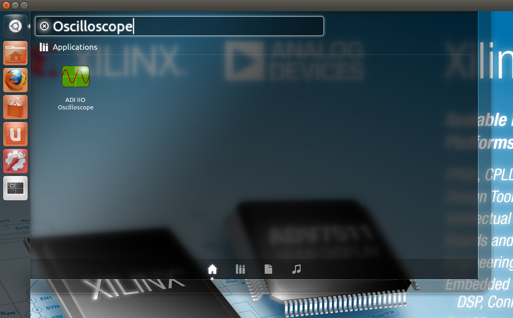Running Remote
The application can be used to connect to another platform that has a connected device in order to configure the device and read data from it. You can connect in 3 different ways:
Manually:
Settings > Connect and enter
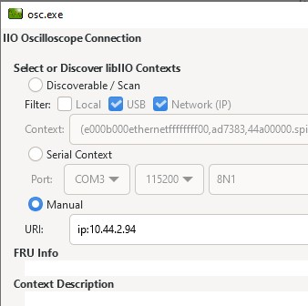ip:and then the IP address in the popup window, and click “OK” or “Refresh”.Settings > Connect and click “Refresh” with a blank IP number. If your network supports zeroconf [1], you will be connected to the device on the network.
The application can be used to connect to another platform that runs no-OS software.
Using the application
Main Window
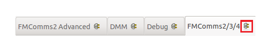Each plugin (or tab) can be detached from the main window simply by clicking on the button placed on the right side of the name of the plugin. Close the detached window to attach the plugin back to the main window.
The Main Window is designed to display a configuration panel (plugin) for each device recognized by the system. Additional plugins will be loaded for device debugging and monitoring purposes such as:
DMM Tab/Plugin
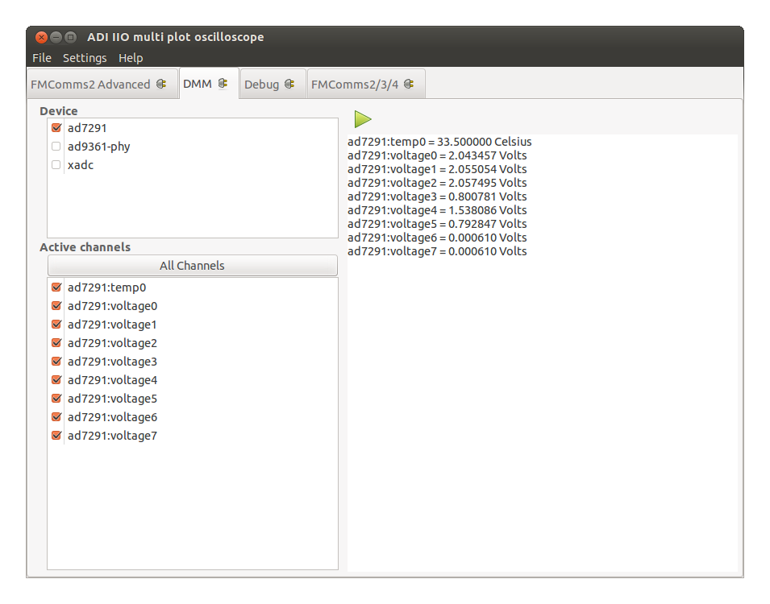The DMM Plugin: The Digital Multimeter continuously displays device specific data once the start button is activated.
Device tab: Displays the list of all available devices.
Active channels tab: Displays the list of channels that belong to the enabled devices. All channels can be enabled simultaneously by using the All Channels button.
Right side tab: Displays data readings of the enabled channels in Active channels tab.
Debug Tab/Plugin
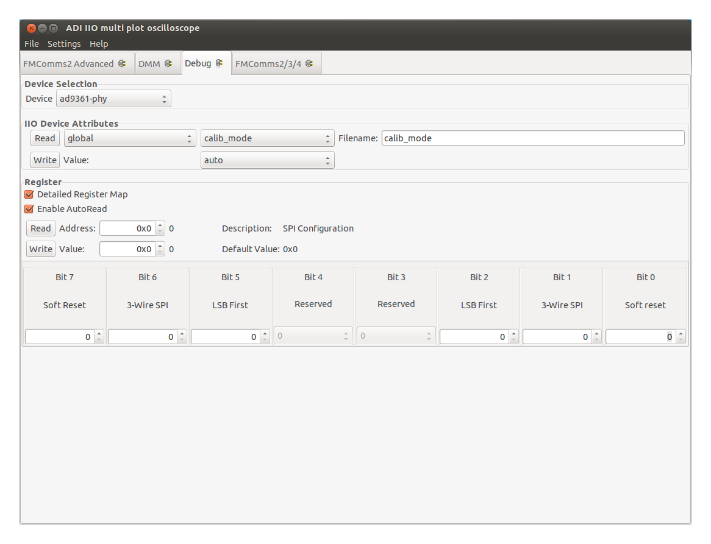Debug Plugin: Is a tool for device debugging. Since “normal” users should
not be doing this, features on this tab may not work unless you have started the
osc application as root (try sudo osc in a terminal).
Device Selection: Sets the active device. Once a device is selected any other information displayed in the plugin is related to this particular device.
IIO Device Attributes: Allows Read/Write operation for the attributes of a device.
Register: Provides low level access to the registers of the device.
Detailed Register Map: When enabled it displays a graphical representation of a register and groups the bits by their functionality. When disabled the newly displayed option (Register Map Type) allows the selection of the register map to be used. SPI registers refer to the internal registers of the device while the AXI Core registers belong to the HDL core associated with the device.
Enable AutoRead: When enabled it allows the register to be read automatically as the register address changes.
Address: The address of the register.
Value: The value of the register at the given address.
Hardware Specific Tab/Plugins
There may be hardware specific plugins/tabs, specific to the platform you are running on.
Each hardware plugin is documented individually:
Here are a few common options:
Capture Window
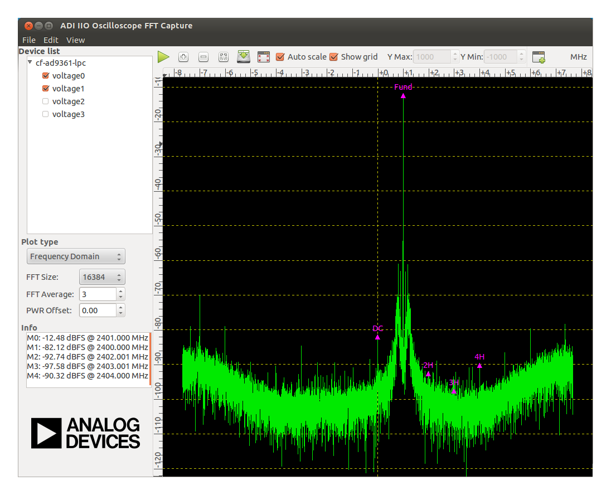The Capture Window is where device data is displayed.
Capture Window Settings
Plot Title: Click Edit > Plot Title to
Show Settings: Click View > Show Settings to
Menu (Along top of the capture/plot window).
File
Save As : Saves data to file.
Quit : Close the capture/plot window
Edit
Plot Title : Change the name of the window.
View
Show Settings : show/hide all settings in the left panel and allow the plot to fill the entire window.
Full Screen : Will make the window full screen.
Settings
Device list: Lists all available ADCs and the corresponding channels. It allows selecting the channels to be displayed.
Plot type
Time domain: Plots the signal in the time domain. Displays the raw samples.
Sample count: Selects the number of samples for time domain, constellation and cross-correlation plotting
Graph Type: Selects the type of all graphs: lines or dots.
Frequency domain: Plots the signal in the frequency domain. Performs a FFT on the signal and displays it.
FFT size: Selects the size of the FFT for frequency domain plotting
Window: Selects the FFT Window. Selecting a window function is not a simple task. Each window function has its own characteristics and suitability for different applications (some are more frequency accurate, others are more amplitude accurate). To choose a window function, you (the user) must select the most appropriate one. Check the details.
FFT Average: Selects the average weight to be applied to the FFT samples.
PWR Offset: Selects the offset of the FFT graph.
Constellation: Plots the signal as a constellation plot. The I-channel will be plotted on the X-axis and the Q-channel on the Y-axis.
Sample count: Selects the number of samples for time domain, constellation and cross-correlation plotting
Graph Type: Selects the type of all graphs: lines or dots.
Cross Correlation: Plots the signal as a cross-correlation plot.
Sample count: Selects the number of samples for time domain, constellation and cross-correlation plotting
Graph Type: Selects the type of all graphs: lines or dots.
Info
Markers : Displays marker measurements.
Devices : Displays Device info (sample rate)
Plot Options/Icons (along top of window)
Capture/stop : Starts or stops the data capture.
Zoom In : Zooms in on a region of the plot.
Zoom Out : Zooms out from a region of the plot.
AutoZoom : Zooms automatically for the signal to fit the screen.
Save As : Saves data to file.
FullScreen : Enters/leaves fullscreen.
Auto scale : When enabled the visible area will automatically be re-scaled to fit the entire plot.
Show grid : Shows or hides the grid in the plot window.
Y Max : Adjusts the upper limit of the vertical axis when Auto scale is disabled.
Y Min : Adjusts the lower limit of the vertical axis when Auto scale is disabled.
New Plot : Creates a new plot of the same type.
Activating Markers
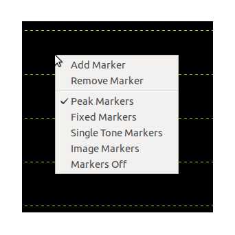Markers are used for plot data measurement in when looking in the frequency domain or cross correlations. To activate the markers right click on the plot and select from the marker menu the type of marker you want to enable. Make sure the capture process is running and the appropriate domain is selected in order to enable the markers properly. The following types of markers are available:
FFT domain (1 channel enabled): Peak, Fixed and Single Tone markers.
FFT domain (2 channels enabled): Peak, Fixed, Single Tone and Image markers.
Constellation: Peak marker.
The enabling of a marker will display a set of 5 markers by default. You can add more markers by selecting Add Marker from the marker menu and remove some by selection Remove Maker.
Fixed markers are designed to have their position moved by the user. Once the fixed markers are visible on the plot right click on the marker symbol and while holding the right button pressed move the mouse to the desired location on the plot and release the right button.
To disable the markers select Markers Off from the marker menu.
Saving Captured Data
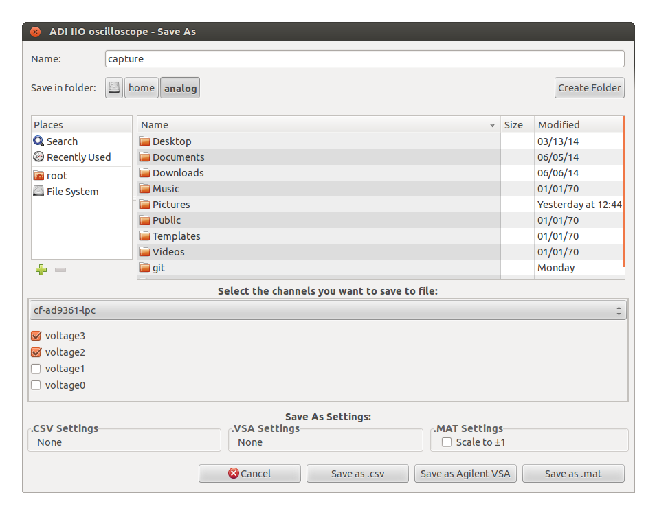Once the data is captured, it can be saved using one of the following formats:
Agilent VSA
.csv
.mat
.png
Click on File > Save As to open the dialog needed to save the data.
Channel Settings
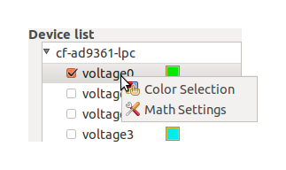Simple math operation can be applied to the channel data. Right click on the name of a channel listed in the Device list and select Math Settings to open the menu with the math operations.
The graph color associated with the channel can be modified. Right click on the name of the channel and select Color Settings to open a color selection panel that will allow you to pick the desired color.
The settings can be applied only in Time domain.
Trigger settings
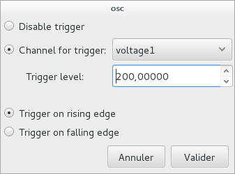In time domain, it is possible to select a capture channel as the trigger source of the oscilloscope. To do so, right-click on the name of the device used for capture, and select Trigger settings. The pop-up window that will open will allow you to configure the channel used for the trigger, as well as the trigger level and edge.
Provided Waveforms
Several waveforms are provided with the application for demonstration purposes, which can be loaded into different devices. However, these are generally not meant for transceiver characterization or demodulation. If you want to do such tasks, we would recommend creation of your own waveforms from tools such as MATLAB.
Source code
Files
The source code for the entire application is at ADI IIO Oscilloscope repository. You can ask questions about it on the EngineerZone.
Internals
If you want to make your own plugin, please refer to the Internals page.